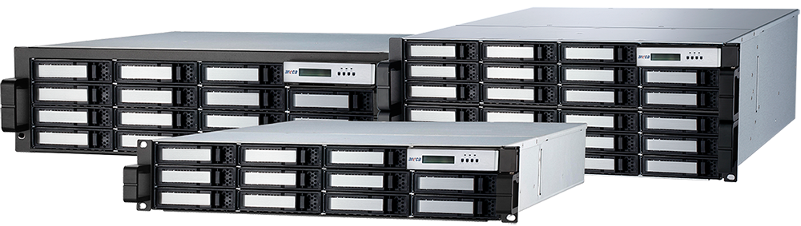
ARC-8050T3 Rackmount
(12/16/24-bays Thunderbolt™ 3 RAID Storage)
Highlights
✵ High performance 40Gbps Thunderbolt 3 interface
✵ Support simultaneous 4K in/output workflow
✵ Dual Thunderbolt 3 ports for daisy-chaining
✵ Fully support Apple M1 silicon on Macs
✵ Controller level hardware encryption and SED drive management
✵ 1m 40Gb/s active Thunderbolt™ 3 (USB-C) cable included
✵ Advanced configuration for video optimized performance settings
✵ Delivers enterprise-class data protection and security
✵ Intelligent power On/Off function for data integrity
✵ Configuration by the Thunderbolt/LAN port/LCD
✵ Support FBM/BBM option for cache protection
✵ Hard drive firmware update all at once
Host Interface
2 x Thunderbolt 3 ports
1 x Display Port

High Performance ROC
Dual Core RAID-on-Chip (ROC) 1.2 GHz
2GB DDR3-1866 ECC Protection
Drive Interface
Up to 12/16/24 x 3.5”/2.5”
12Gb/s SAS or 6Gb/s SATA HDDs/SSDs
12/16/24-bays Thunderbolt™ 3 RAID Storage
ARC-8050T3 rackmount is the 12/16/24-bay Thunderbolt 3 rackmount SAS/SATA RAID storage with RAID control capabilities solution for both PC and Mac. ARC-8050T3 rackmount incorporated on-board 1.2GHz dual core ROC and 2GB DDR3-1866 ECC SDRAM memory to deliver true high performance hardware RAID protection against drive failure.This combination helps to provide a high performance storage device perfect for the video editor working with Real time multi-stream HD and 4K workflows.
Thunderbolt™ 3 brings Thunderbolt to USB-C at speeds up to 40 Gbps, creating one compact port that does it all – delivering the fastest, most versatile connection to any dock, display, or data device. ARC-8050T3 rackmount is equipped with dual Thunderbolt 3 ports for connecting to any Thunderbolt 3-enabled host and offers an additional Thunderbolt 3 port for daisy-chaining other peripherals, while also supplying power for quick notebook charging. The Thunderbolt daisy-chaining allows connection of up to six devices, so customers can connect ARC-8050T3 rackmount for massive amounts of video storage with a single Thunderbolt connection to their host computer.
| Thunderbolt™ 3 to 12Gb/s SAS RAID Storage | |||
| ARC-8050T3-12R | ARC-8050T3-16R | ARC-8050T3-24R | |
| Form Factor | 2U-12 bays 19-inch | 3U-16 bays 19-inch | 4U-24 bays 19-inch |
| Connection | Thunderbolt 3 x 2 / Display Port x 1 | ||
| Disk Support | 12 x / 16 x / 24 x 12Gb/s SAS/SATA 3.5”/2.5”HDDs/SSDs | ||
| Expansion Support | One SFF-8644 expansion up to 512 HDDs | ||
| I/O Processor | Dual Core 1.2 GHz SAS ROC | ||
| On-Board Cache | 2GB DDR3-1866 | ||
| RAID Level | 0, 1, 1E, 3, 5, 6, 10, 30, 50, 60, Single Disk or JBOD | ||
| OS Support | macOS 10.12 or later & Windows 8/10 or later | ||
| Cooling Fan | 2 x 2700rpm | 3 x 2700rpm | |
| Power Supply | Dual 400W | Triple 400W | |
|
• Supports 100–240VAC input at 47 and 63Hz frequency • Hot swap and redundant with PFC N+1 design |
|||
| Power Dissipation | Typical: 22W | Typical: 25.3W | |
| Operating Temperature | 0 °C to 35 °C | ||
| Operating Humidity | 10% to 85%, non-condensing | ||
| CE, FCC | |||
| Physical Dimensions (H x W x D) |
Without handles: 3.5 x 17.5 x 17.6 in (88.2 x 445 x 448 mm) |
Without handles: 5.2 x 17.5 x 17.6 in (132.6 x 445 x 448 mm) |
Without handles: 6.9 x 17.5 x 17.6 in (176.4 x 445 x 448 mm) |
| With handles: 3.5 x 22.9 x 19.0 in (88.2 x 482 x 484 mm) |
With handles: 5.2 x 22.9 x 19.0 in (132.6 x 482 x 484 mm) |
With handles: 6.9 x 22.9 x 19.0 in (176.4 x 482 x 484 mm) |
|
| Weight | 59.5 lbs / 27Kg | 68.3 lbs / 31Kg | 75 lbs / 34Kg |
| Sound Pressure Level | 37.4 dB | 37.4 dB | 40.3 dB |
| Warranty | 3 years | ||
| BBM Support | ARC-6120BAT121-7 | ||
Ultrafast Transfer Speed
Unprecedented Performance
ARC-8050T3-12R/16R/24R RAID storage is built to deliver unprecedented performance, using only carefully, best-in-class components. These include the dual core LSI SAS2308, 12Gb/s SAS ROC, 2GB DDR3-1866 SDRAM with ECC protection and the latest Thunderbolt3-encbled USB-C ports up to 40Gbps, dual 4K UHD external displays.
Powerful Broadcom 12G SAS Engine
ARC-8050T3-12R/16R/24R series integrate the latest Broadcom 12Gb/s dual core SAS Raid-on-Chip to give you the maximum SAS and SATA bandwidth and protection you need to tackle even the hardest challenging tasks easily.
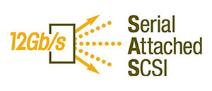

True Hardware RAID Controller
At the heart of ARC-8050T3-12R/16R/24R is the incredibly powerful dual-core Avago SAS3108 ROC, giving effortless performance as desirable. It delivers 12Gb/s SAS, 6Gb/s SATA, and the security of Areca data protection. Help eliminate storage bottlenecks in with PCI Express 3.0 lanes with SAS transfer rates of up to 12Gb/s and SATA rates up to 6Gb/s.
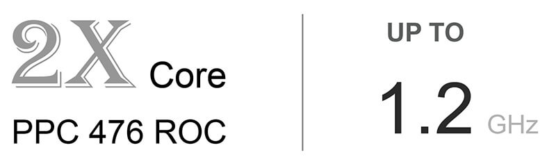
Speed Up 2GB DDR3-1866 SDRAM
With a massive 2GB of DDR3-1866 SDRAM, ARC-8050T3-12R/16R/24R gives you super-smooth multitasking during the period of high overload in 4K environment. ARC-8050T3 can configure how much cache SDRAM dedicated for read, and how much for write. If your server application has significantly more reads than writes or more writes than reads, you might need to change this setting to adjust the read/write cache ratio for improving performance. Big cache is the perfect choice for a 4K application drive, making your professional apps work as fast as possible.
| SDRAM | Memory Clock (MHz) | Bus Clock(MHz) | Data Rate(MT/s) | Peak Transfer Rate (GB/s) |
|---|---|---|---|---|
| DDR3-800 | 100 | 400 | 800 | 6.4 |
| DDR3-1066 | 133.33 | 533.33 | 1066.67 | 8.5 |
| DDR3-1866 | 233.33 | 933.33 | 1866.67 | 14.9 |
High Bandwidth PCI-E 3.0 Support
To run the PCie 3.0 slots in Gen 3 speed, please must install the ROC which supports PCI Express 3.0. If you install the PCIe2.0 ROC, the PCI Express 3.0 slots will run only at Gen2 speed.
Higher bit rate - 8.0GT/s
Higher bandwidth per lane - 1GB/s
Higher efficiency - 98.5% encoding efficiency
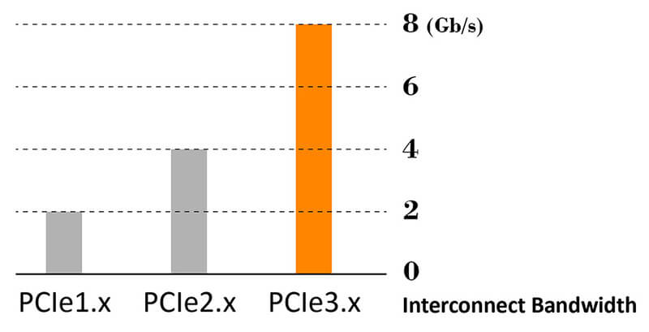
Professional Connectivity
The USB-C That Does It All
ARC-8050T3-12R/16R/24R is equipped with dual Thunderbolt 3 ports for connecting to any Thunderbolt 3-enabled host and offers an additional Thunderbolt 3 port for daisy-chaining other peripherals, while also supplying power for quick notebook charging. Thunderbolt 3 supports data transfers at up to 40 Gbps, which is twice the bandwidth of Thunderbolt 2 and 4 times faster than USB 3.1.

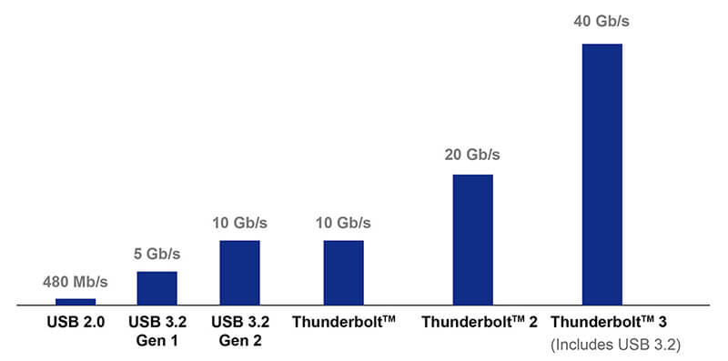
Daisy-chain Multiple Devices
Thunderbolt daisy-chaining allows connection of up to six devices, so customers can connect ARC-8050T3-12R/16R/24R for massive amounts of video storage with a single Thunderbolt connection to their host computer. Additionally, ARC-8050T3 supports a full sized DisplayPort video output connector on its rear, allowing for a quick and easy 4K 60Hz display setup.
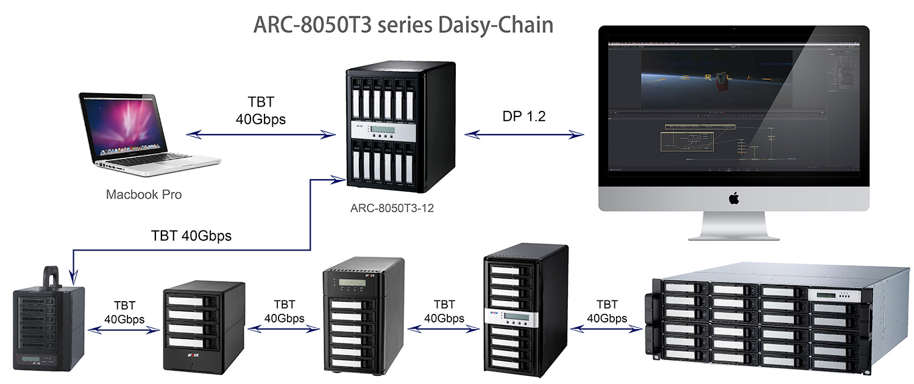
Compatible with Thunderbolt and Thunderbolt 2
The Apple’s Thunderbolt 3 (USB-C) to Thunderbolt 2 Adapter (sold separately) lets you connect Areca ARC-8050T3 solutions to any of the Mac with a Thunderbolt or Thunderbolt 2 port and macOS Sierra 10.12 or later. For more detail information and potential restrictions, please see Apple Support.
Controller-Based H/W Encryption Engine
Host independent real-time controller-based hardware encryption does not impact the performance of ARC-8050T3-12R/16R/24R RAID storage and can implement on any kinds of HDD that is transparent to the user, the OS, and applications. Areca encryption function secures a sensitive, mission-critical volume's data from unauthorized access or modification in the event of drive theft, as well as more routine activities such as the return of defective drives for servicing or the decommission or repurposing of drives. Local key management in the controller is designed to protect data from security breaches with minimal cost and complexity. User can use ARC-8050T3 RAID storage API code to design its own key management utility. ARC-8050T3 RAID storages support 128- and 256-bit encryption keys using AES (a key size of 128, or 256 bits), or password (a variable key size).
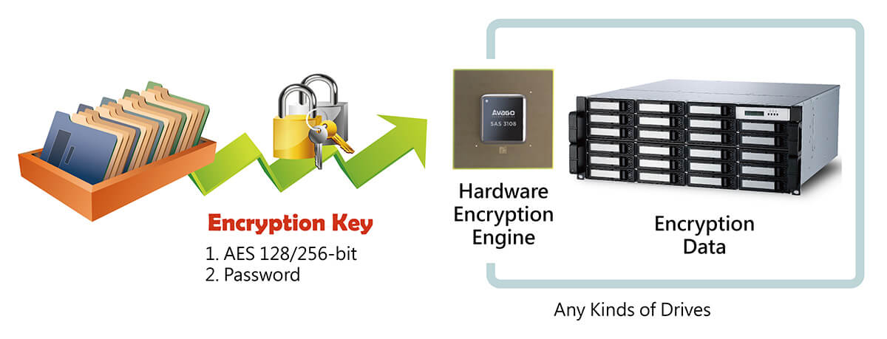
SED-Based Encryption
Areca firmware Security Function, together with self-encrypting drives (SEDs), secures a data in the hard disks from unauthorized access or modification resulting from theft, loss or repurposing of drives. Protection is achieved by the SED hard drive that automatically and continuously encrypts the data on the drive without any user interaction.
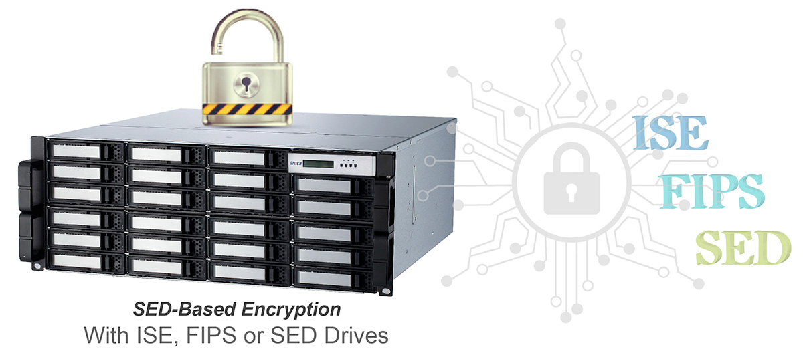
SAS Expansion Port
The storage capacity can be expanded instantly by adding additional cost effective ARC-4038 12G SAS Expander units, up to 512 drives with multiple 12G SAS expanders solutions like the 8/12 bay tower 16/24 or high bay rackmount 12G SASJBODs solutions too! Ultimately allow you to convert your 12G SAS expander storage to be use with any Thunderbolt 3 enabled host.
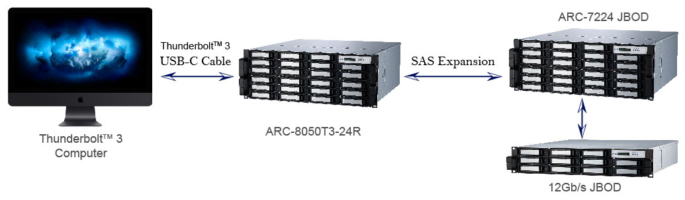
Effective Management Tool
Areca provides more flexible management tools comparing with others competitors to manage and monitor ARC-8050T3 RAID storage.
• LCD: Easy Configuration & Monitor LCD
Instantly monitor system's status as a glance
ARC-8050T3 LCD is the primary user interface for the RAID storage. All configuration and management of the controller and its properly connected disk arrays can be performed from this interface. The LCD status panel informs you of the ARC-8050T3 RAID storage real-time operating status at a glance so users can easily grasp the status of the system at all times.

• LAN Port: Out of Band Management (Without Disturb Host Access)
Lets you set up and manage RAID storage through Out-of-band web browser manager and ArcSAP utility
ARC-8050T3 RAID storage also offers an alternative out-of band method d for McRAID storage manager. User can access the built-in configuration without needing the ArcHTTP proxy server on the host system. ARC-8050T3-series RAID storages have an RJ-45 connector out-of-band management port on the rear. You can monitor and manage an ARC-8050T3-series RAID storage using this dedicated management channel to manage the ARC-8050T3-series RAID storage without any host connection. It will also not disturb the host access when you monitor or manage the ARC-8050T3. ARC-8050T3 has the advantage of the Gigabit Ethernet connectivity option which might be a life-saver if the Thunderbolt port fails, or if you don’t have access to an Apple-supported device.
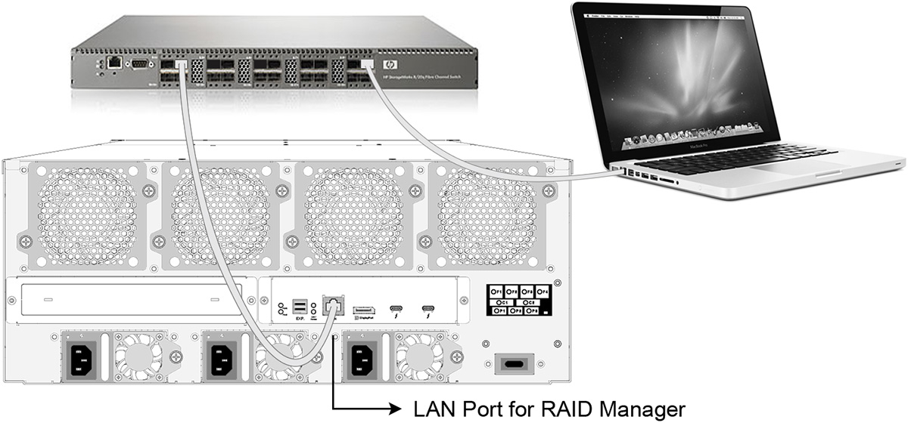
• Thunderbolt Bus
Lets you set up and manage RAID storage through In-band web browser manager and ArcSAP utility
You can configure in-band management for communication to travel over the Thunderbolt data path between a data host and ARC-8050T3. In-band management uses a proxy agent HTTP management software (ArcHTTP) running on a data host to communicate with an ARC-8050T3.
Web Browser-Based Management
McRAID storage manager is firmware-based utility, which is accessible via the web browser installed on your operating system. The web browser-based McRAID storage manager is a HTML-based application, which utilizes the browser (Safari, IE and Mozilla etc) installed on your monitor station. It can be accessed through the in-band Thunderbolt bus and out of band Ethernet port. The in-band-Thunderbolt bus method can launch the web browser-based McRAID storage manager via ArcHTTP proxy server.

User-Friendly Graphical-Based Management
Areca Single Admin Portal (ArcSAP) quick manager is an alternative graphical-based device management program specifically designed for use in managing and configuring RAID unit implemented using any of Areca RAID controllers. ArcSAP quick manager can scan for multiple RAID units in the local and remote systems and provide an effective mechanism to configure your RAID units.

RAID Storage Power On/Off Controls
ARC-8050T3 RAID storage contains power On/Off controls on the controller. The power On/Off controls can turn ARC-8050T3 power in unison with the host computer power status for data integrity. It is advised that you use a proper power down procedure when you would like to power down your Mac and thunderbolt storage. If you attempt to power it down by pressing and holding the power button you run the risk of losing unsaved data and increase the chance of damaging hardware, more specifically the hard drive. Following improper power down, power up and restart sequence of a thunderbolt RAID storage and attached hosts will affect the normal functionality.
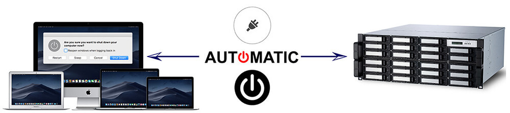
Smart Battery for the Integrity of the Cached Data
ARC-8050T3-12R/16R/24R RAID storages have integrated caches for increasing performance. With corresponding protective mechanisms, the content of these unwritten cached data in the SDRAM would be lost when there is a complete AC power failure or a brief unexpected power outage. For that reason, a battery backup unit (BBU) protects the integrity of the cached data on ARC-8050T3 RAID storages by providing backup power. The battery backup module has built-in functionality to charge the battery pack automatically and to communicate battery status information to the RAID storage.

Benchmark
Actual data rates may vary depending on operating environment, RAID mode, RAID configuration, disk model and disk performance.
The best performance is installed the SSDs and connect the device to a computer that supports Thunderbolt 3 at 40Gbps......
more detailed information 
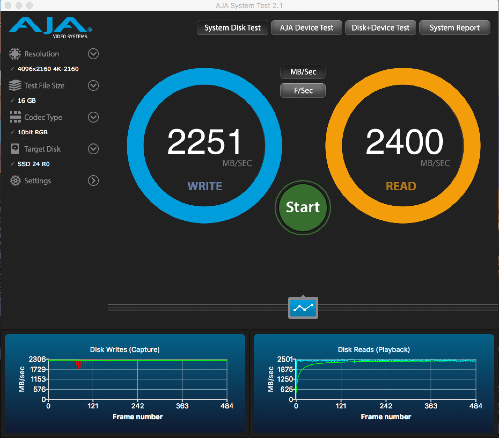
Whisper-Quiet Operation
The intelligent cooling continuously adapts to environmental conditions by automatically controlling the speed of cooling fans. As a result, the fan reduces noise to a minimum, almost imperceptible level. Whisper-Quiet Low Sound Levels operation, make the ARC-8050T3 well suited for video/audio applications, without impacting the work environment.
| ARC-8050T3-12R | ARC-8050T3-16R | ARC-8050T3-24R | |
| Sound Pressure Level | 37.4 dB | 37.4 dB | 40.3 dB |